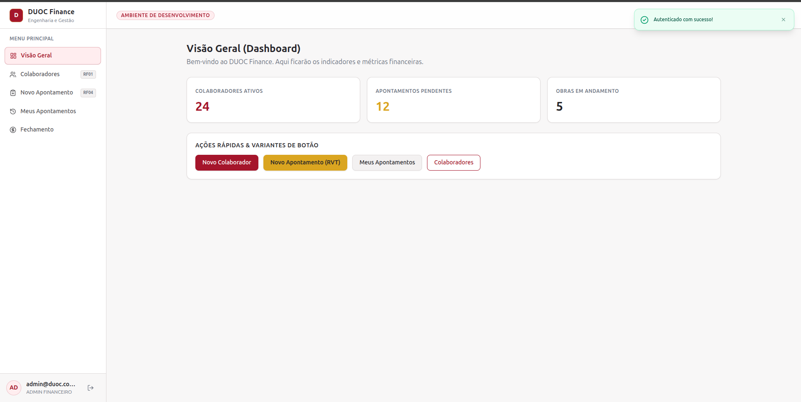
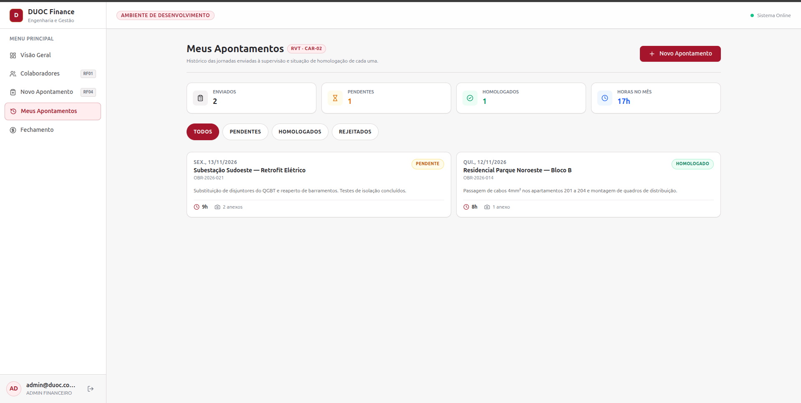
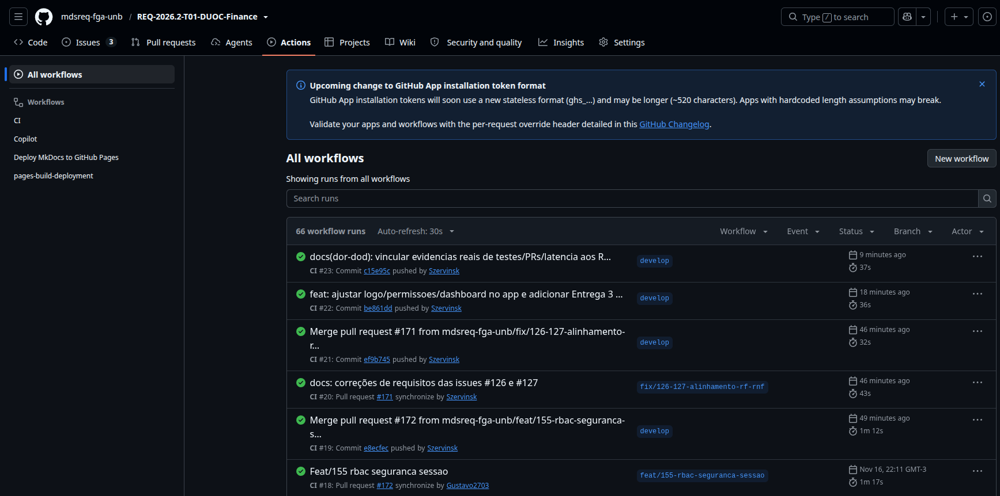
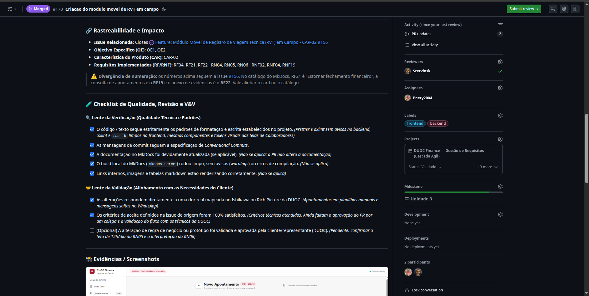
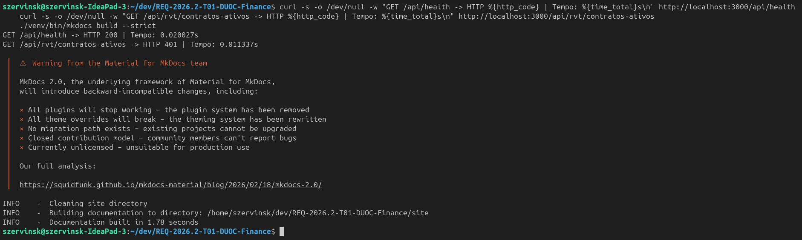

Definition of Done (DoD) — Acordos e Resultados por Incremento¶
O DoD é o portão de saída que confirma que um incremento está funcional, integrado, verificado por testes automatizados, revisado por pares e documentado. Para evitar ambiguidades entre commits técnicos e entregas de valor, a equipe distingue o DoD Técnico por Pull Request da Homologação Sociotécnica por Incremento RAD Consolidado.
Para consultar os critérios de entrada e prontidão, acesse Definition of Ready (DoR).
1. Checklist Operacional de Conclusão (Critérios Oficiais)¶
| Dimensão | Critério de Conclusão | Evidência Esperada |
|---|---|---|
| Incremento funcional | Fluxo operável ponta a ponta no ambiente de demonstração (Docker/Staging), integrando interface, API e persistência. | Containers ativos ou ambiente Staging + links dos PRs. |
| Critérios de aceitação | 100% dos critérios aplicáveis ao requisito verificados sem pendências ocultas. | Saída de testes automatizados / checklist ligado à Issue ou PR. |
| Código e inspeção por pares | Código tipado e formatado conforme padrões do repositório; checks de CI (lint, tsc, build) aprovados e revisão por revisor diferente do autor. |
Checklist preenchido no PR, aprovação de revisor e CI verde. |
| Testes automatizados | Suítes de testes unitários e de integração pertinentes executadas e aprovadas. | Relatório/print da suíte Vitest no PR e CI. |
| Requisitos não funcionais | RNFs aplicáveis ao incremento e ao ambiente vigente verificados por testes ou medições; RNFs exclusivos de produção (ex.: SLA 99,5% e backup produtivo) avaliados no Cutover. | Resultados de testes de segurança/RBAC/payload e medições de latência. |
| Documentação — Docs as Code | Documentação e catálogo atualizados sem avisos em mkdocs build --strict. |
Commits documentais e saída limpa do build MkDocs. |
| Homologação sociotécnica | Ao fechamento de cada incremento RAD consolidado, o fluxo é demonstrado à cliente em sessão UAT com dados sintéticos, registrando aceite ou ajustes. | Ata de validação do incremento / sessão UAT com Maria Beatryz. |
Procedimento de Inspeção por Pares (Pull Request)¶
- Preparação: O autor abre o PR usando
.github/PULL_REQUEST_TEMPLATE.md, vincula a Issue e lista os critérios atendidos. - Inspeção: Um revisor distinto do autor verifica regras de negócio, tratamento de erros, segurança/RNFs, testes e documentação.
- Aprovação e CI: Todos os apontamentos são resolvidos e o workflow
.github/workflows/ci.ymldeve estar verde antes do merge emdevelopoumain.
2. Resultados do DoD — Incremento 1 (Concluído Tecnicamente)¶
Registro critério por critério para os 10 Requisitos Funcionais entregues no Incremento 1 (RF01–RF04, RF13, RF17–RF19, RF22, RF23) e os 7 RNFs verificados (RNF02, RNF03, RNF04, RNF07, RNF13, RNF14, RNF20).
| Critério do DoD | Situação | Evidência Comprobatória (PRs & Registros) |
|---|---|---|
| Incremento funcional (Docker / Staging) | Atendido | PostgreSQL (5432), API NestJS (3000) e Frontend React (5173) operacionais; fluxos integrados nos PRs #167, #170 e #172. |
| Testes automatizados (Backend e Frontend) | Atendido | 107/107 testes backend aprovados em 15 suítes Vitest + 18/18 testes frontend aprovados em 3 suítes (PR #172 e PR #168). |
| Código, tipagem e inspeção por pares (CI/CD) | Atendido | Checks lint, tsc --noEmit e npm run build em .github/workflows/ci.yml (PR #168) + checklist de revisão preenchido nos PRs. |
| RNFs verificáveis no incremento | Atendido | RNF02 (latência 0,020s em /api/health e 0,011s em /api/rvt/contratos-ativos), RNF03 (bcrypt custo >= 10), RNF07 (SHA-256 + MIME real), RNF13 (JWT 900s), RNF14 (RBAC HTTP 401/403) e RNF20 (DTOs). |
| Documentação — Docs as Code | Atendido | Catálogo atualizado com evidências visuais (PR #174) e mkdocs build --strict sem erros nem links quebrados. |
| Homologação sociotécnica do incremento | Pendente de UAT | Protótipos e telas validados na Ata 06; sessão formal de UAT do fluxo integrado em Staging com Maria Beatryz prevista para 27/11/2026 (Semana 12). |
Evidências Visuais Comprobatórias (DoD — Incremento 1)¶
1. Incremento Funcional — Containers Docker e Telas Integradas
 Containers Docker ativos (db, backend, frontend)
Containers Docker ativos (db, backend, frontend)


Dashboard autenticado (ADMIN_FINANCEIRO)

Módulo de Apontamentos RVT em execução2. Testes Automatizados — Suítes Backend (107/107) e Frontend (18/18)
 Backend Vitest: 15 suítes / 107 testes aprovados
Backend Vitest: 15 suítes / 107 testes aprovados
 Frontend Vitest: 3 suítes / 18 testes aprovados
Frontend Vitest: 3 suítes / 18 testes aprovados
3. Inspeção por Pares, CI/CD, Latência de API e Build Docs as Code


Pipelines GitHub Actions (CI e Deploy)

Checklist e rastreabilidade no PR

Latência 20ms / 11ms (HTTP 401 RBAC) e mkdocs --strict3. Resultados do DoD — Incrementos 2, 3 e Pós-MVP (Não Concluídos)¶
Para evitar qualquer ambiguidade, nenhum requisito fora do Incremento 1 possui DoD declarado como concluído:
| Conjunto de Requisitos | Situação do DoD | Pendências Objetivas para Conclusão |
|---|---|---|
Incremento 2 em Desenvolvimento (6 RFs): RF07, RF08, RF28, RF29, RF32, RF35 |
DoD Pendente (Em Execução) | Implementação das rotas e telas de deliberação/reembolsos, testes automatizados, PR revisado e homologação em UAT. |
Prontos para Dev (12 RFs): RF05, RF06, RF27, RF09–RF11, RF33, RF34, RF37–RF40 |
DoD Não Iniciado | Aguardando início da codificação nos próximos ciclos do Incremento 2/3. |
| Aguardando Ciclo (3 RFs) e Pós-MVP (9 RFs) | DoD Não Iniciado | Itens fora do ciclo atual (RF14, RF25, RF26 e Release 2). |
RNFs de Ciclos Futuros / Produção (RNF05, RNF06, RNF08–RNF12, RNF15–RNF19, RNF01) |
DoD Não Iniciado | Verificação condicionada à entrega do motor financeiro, auditoria e infraestrutura de produção (Cutover). |
Histórico de Versão¶
| Versão | Data | Descrição | Autor(es) | Revisor(es) |
|---|---|---|---|---|
1.0 |
17/11/2026 | Desmembramento do DoD em documento próprio com evidências visuais em blocos expansíveis (largura total) e status explícito dos demais incrementos. | Matheus Ribeiro Szervinsk | Equipe Cascata Ágil |